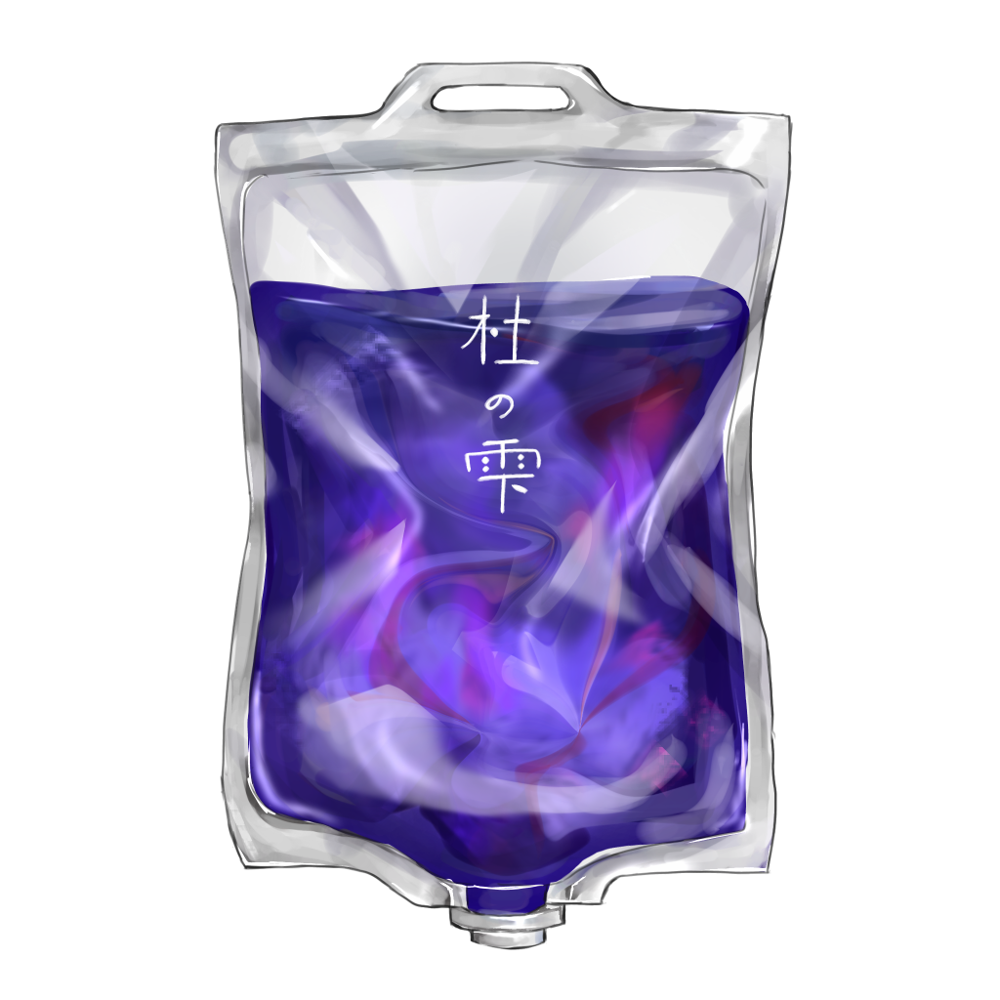

杜の雫

【効果・効能】
夜の神社を歩くような静寂を与える点滴薬です。
木造建築の奥行きある暗さ、手水舎の水音、参拝者の足音、
灯籠のわずかな光に身を置くように日常の喧騒から離れ、
失われがちな感覚を取り戻すことでができます。
懐かしさや畏敬の念、わずかな罪悪感にも似た感情が交錯し、
思考がゆっくり整理されていきます。
【成分】
・古い木造建築
・風
・木
・灯籠の明かり
・足音
・静寂
・鈴虫の鳴き声
【服用時点】
夜にふと寄り道したくなったとき
【副作用】
・現実世界の騒音が過剰に気になることがあります
・夜道を目的もなく散歩したくなることがあります
【生産地】
カナガワ
【製造会社名】
春巻製薬株式会社
製造者からひとこと
地元の神社に行く機会といえば、夏祭りや初詣くらいだった。
いつも人で賑わっていて、楽しい場所という印象が強かった。
ある夏の夜、散歩の途中でふと立ち寄ってみると、そこには見慣れているはずなのに
まったく違う神社があった。
境内には誰もおらず、わずかな灯りだけが静かに辺りを照らしている。
聞こえてくるのは、自分の足音と風に揺れる木々の音、そして虫の鳴き声だけ。
昼間や祭りの日には気づかなかった静けさがそこにはあった。
普段は賑わいの中に隠れている神社本来の空気を感じ、
自分自身と向き合うような不思議な時間を過ごすことができた。
この薬は、そんな夏の夜の静寂を届けるために製造された。